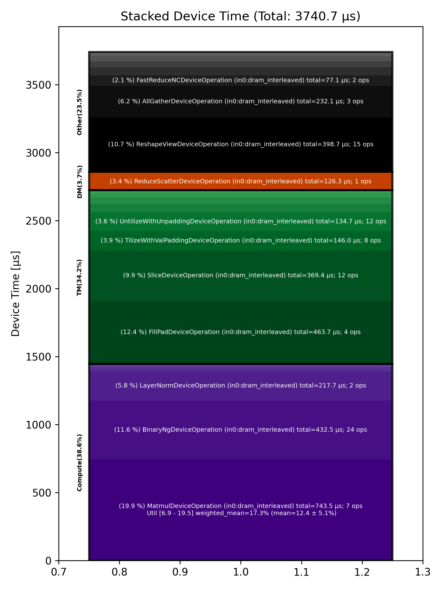

🚀 Performance Report 🚀 ======================== ID Total % Bound OP Code Device Device Time Op-to-Op Gap Cores DRAM DRAM % FLOPs FLOPs % Math Fidelity --------------------------------------------------------------------------------------------------------------------------------------------------------------------------- 24 0.4 % LayerNormDeviceOperation 13 108 μs 1 BF16, BF16 => BF16 65 1.1 % SLOW MatmulDeviceOperation 32 x 2880 x 512 11 42 μs 236 μs 16 41 GB/s 14.1 % 2.3 TFLOPs 6.9 % HiFi2 BF16 x BFP8 => BF16 90 0.4 % ReshapeViewDeviceOperation 16 12 μs 81 μs 72 BF16 => BF16 120 0.7 % SliceDeviceOperation 13 5 μs 161 μs 72 BF16 => BF16 132 0.5 % BinaryNgDeviceOperation 26 16 μs 98 μs 72 BF16, BF16 => BF16 189 0.6 % SliceDeviceOperation 19 5 μs 146 μs 72 BF16 => BF16 207 1.7 % BinaryNgDeviceOperation 6 15 μs 394 μs 72 BF16, BF16 => BF16 230 0.8 % BinaryNgDeviceOperation 3 7 μs 196 μs 72 BF16, BF16 => BF16 277 1.1 % BinaryNgDeviceOperation 23 16 μs 245 μs 72 BF16, BF16 => BF16 291 1.0 % BinaryNgDeviceOperation 25 15 μs 243 μs 72 BF16, BF16 => BF16 346 1.0 % BinaryNgDeviceOperation 16 7 μs 228 μs 72 BF16, BF16 => BF16 378 1.0 % ConcatDeviceOperation 16 7 μs 244 μs 72 BF16, BF16 => BF16 403 2.2 % SLOW MatmulDeviceOperation 32 x 2880 x 64 7 30 μs 508 μs 2 12 GB/s 4.3 % 0.4 TFLOPs 9.6 % HiFi2 BF16 x BFP8 => BF16 439 0.5 % ReshapeViewDeviceOperation 14 3 μs 126 μs 32 BF16 => BF16 477 0.8 % SliceDeviceOperation 19 2 μs 190 μs 16 BF16 => BF16 499 0.4 % PermuteDeviceOperation 21 4 μs 93 μs 16 BF16 => BF16 542 0.7 % BinaryNgDeviceOperation 11 5 μs 168 μs 72 BF16, BF16 => BF16 570 1.0 % SliceDeviceOperation 16 2 μs 248 μs 16 BF16 => BF16 597 1.0 % PermuteDeviceOperation 23 4 μs 245 μs 16 BF16 => BF16 632 0.4 % BinaryNgDeviceOperation 13 5 μs 87 μs 72 BF16, BF16 => BF16 667 0.7 % BinaryNgDeviceOperation 17 3 μs 173 μs 72 BF16, BF16 => BF16 689 1.1 % BinaryNgDeviceOperation 4 5 μs 257 μs 72 BF16, BF16 => BF16 717 1.1 % BinaryNgDeviceOperation 31 5 μs 257 μs 72 BF16, BF16 => BF16 748 1.0 % BinaryNgDeviceOperation 30 3 μs 247 μs 72 BF16, BF16 => BF16 784 1.0 % ConcatDeviceOperation 5 2 μs 252 μs 32 BF16, BF16 => BF16 807 1.1 % InterleavedToShardedDeviceOperation 2 1 μs 272 μs 16 BF16 => BF16 835 1.0 % PagedUpdateCacheDeviceOperation 25 4 μs 244 μs 16 BF16, BF16 => BF16 883 1.5 % SLOW MatmulDeviceOperation 32 x 2880 x 64 7 30 μs 341 μs 2 12 GB/s 4.3 % 0.4 TFLOPs 9.6 % HiFi2 BF16 x BFP8 => BF16 914 0.4 % ReshapeViewDeviceOperation 20 3 μs 94 μs 32 BF16 => BF16 961 0.7 % PermuteDeviceOperation 8 4 μs 170 μs 32 BF16 => BF16 963 0.4 % InterleavedToShardedDeviceOperation 25 1 μs 104 μs 16 BF16 => BF16 996 0.6 % PagedUpdateCacheDeviceOperation 26 4 μs 151 μs 16 BF16, BF16 => BF16 1054 0.4 % PermuteDeviceOperation 11 8 μs 101 μs 72 BF16 => BF16 1087 1.1 % SdpaDecodeDeviceOperation 10 17 μs 264 μs 72 BF16, BF16 => BF16 1100 1.4 % PermuteDeviceOperation 30 22 μs 326 μs 72 BF16 => BF16 1127 0.9 % ReshapeViewDeviceOperation 2 14 μs 215 μs 16 BF16 => BF16 1161 1.4 % SLOW MatmulDeviceOperation 32 x 512 x 2880 30 15 μs 336 μs 45 113 GB/s 39.2 % 6.3 TFLOPs 13.6 % HiFi4 BF16 x BFP8 => BF16 1201 1.7 % AllGatherDeviceOperation 0 68 μs 360 μs 24 BF16 => BF16 1221 0.7 % FillPadDeviceOperation 27 155 μs 15 μs 8 BF16 => BF16 1267 0.2 % FastReduceNCDeviceOperation 21 10 μs 34 μs 72 BF16 => BF16 1311 0.3 % SliceDeviceOperation 10 3 μs 76 μs 72 BF16 => BF16 1319 0.8 % BinaryNgDeviceOperation 2 5 μs 194 μs 72 BF16, BF16 => BF16 1364 1.1 % ReshapeViewDeviceOperation 22 45 μs 234 μs 72 BF16 => BF16 1388 1.1 % BinaryNgDeviceOperation 30 49 μs 218 μs 72 BF16, BF16 => BF16 1435 1.3 % LayerNormDeviceOperation 17 110 μs 206 μs 16 BF16, BF16 => BF16 1447 0.7 % ReshapeViewDeviceOperation 2 29 μs 141 μs 72 BF16 => BF16 1491 0.3 % UntilizeWithUnpaddingDeviceOperation 21 9 μs 62 μs 45 BF16 => BF16 1531 0.8 % RepeatDeviceOperation 17 9 μs 177 μs 72 BF16 => BF16 1550 0.5 % TilizeWithValPaddingDeviceOperation 7 39 μs 85 μs 45 BF16 => BF16 1597 3.1 % DRAM MatmulDeviceOperation 32 x 2880 x 5760 20 359 μs 416 μs 60 191 GB/s 66.4 % 11.8 TFLOPs 19.2 % HiFi4 BF16 x BFP8 => BF16 1624 0.1 % BinaryNgDeviceOperation 13 21 μs 1 μs 72 BF16, BF16 => BF16 1650 0.1 % UntilizeWithUnpaddingDeviceOperation 20 32 μs 1 μs 60 BF16 => BF16 1677 1.2 % SliceDeviceOperation 31 155 μs 145 μs 64 BF16 => BF16 1701 0.2 % TilizeWithValPaddingDeviceOperation 27 39 μs 1 μs 45 BF16 => BF16 1735 0.3 % UnaryDeviceOperation 2 9 μs 67 μs 72 BF16 => BF16 1783 0.5 % BinaryNgDeviceOperation 14 15 μs 98 μs 72 BF16, BF16 => BF16 1813 0.7 % UntilizeWithUnpaddingDeviceOperation 23 32 μs 149 μs 60 BF16 => BF16 1829 0.9 % SliceDeviceOperation 27 155 μs 54 μs 64 BF16 => BF16 1858 0.2 % TilizeWithValPaddingDeviceOperation 24 39 μs 9 μs 45 BF16 => BF16 1911 0.3 % UnaryDeviceOperation 14 9 μs 53 μs 72 BF16 => BF16 1942 0.8 % BinaryNgDeviceOperation 15 17 μs 187 μs 72 BF16, BF16 => BF16 1970 1.0 % UnaryDeviceOperation 20 11 μs 232 μs 72 BF16 => BF16 1994 0.4 % BinaryNgDeviceOperation 28 12 μs 93 μs 72 BF16, BF16 => BF16 2045 1.2 % BinaryNgDeviceOperation 19 12 μs 279 μs 72 BF16, BF16 => BF16 2067 2.9 % SLOW MatmulDeviceOperation 32 x 2880 x 2880 7 235 μs 489 μs 45 147 GB/s 51.1 % 9.0 TFLOPs 19.5 % HiFi4 BF16 x BFP8 => BF16 2090 0.0 % BinaryNgDeviceOperation 28 11 μs 1 μs 72 BF16, BF16 => BF16 2117 0.8 % ReshapeViewDeviceOperation 27 159 μs 31 μs 72 BF16 => BF16 2160 0.2 % TypecastDeviceOperation 5 57 μs 1 μs 72 BF16 => FP32 2196 0.4 % ReshapeViewDeviceOperation 22 47 μs 42 μs 72 FP32 => FP32 2241 1.1 % SLOW MatmulDeviceOperation 32 x 2880 x 32 11 33 μs 241 μs 1 14 GB/s 4.9 % 0.2 TFLOPs 8.7 % HiFi2 FP32 x BFP8 => FP32 2242 0.5 % TypecastDeviceOperation 24 2 μs 110 μs 1 FP32 => BF16 2291 0.9 % FillPadDeviceOperation 21 3 μs 221 μs 1 BF16 => BF16 2315 1.2 % PadDeviceOperation 29 35 μs 251 μs 2 BF16 => BF16 2364 0.2 % FillPadDeviceOperation 18 5 μs 39 μs 1 BF16 => BF16 2385 0.9 % TopKDeviceOperation 4 44 μs 179 μs 1 BF16 => BF16 2424 0.2 % SliceDeviceOperation 13 1 μs 38 μs 1 BF16 => BF16 2442 0.9 % SliceDeviceOperation 28 1 μs 217 μs 1 UINT16 => UINT16 2491 0.4 % TypecastDeviceOperation 17 2 μs 91 μs 1 UINT16 => INT32 2529 0.7 % ReshapeViewDeviceOperation 8 5 μs 163 μs 16 INT32 => INT32 2544 0.4 % UntilizeWithUnpaddingDeviceOperation 5 3 μs 96 μs 16 INT32 => INT32 2577 0.6 % UntilizeWithUnpaddingDeviceOperation 4 3 μs 152 μs 16 INT32 => INT32 2614 0.3 % PermuteDeviceOperation 15 3 μs 81 μs 16 INT32 => INT32 2627 0.7 % PermuteDeviceOperation 25 3 μs 176 μs 16 INT32 => INT32 2673 0.3 % ConcatDeviceOperation 4 2 μs 81 μs 32 INT32, INT32 => INT32 2713 0.7 % PermuteDeviceOperation 12 3 μs 178 μs 16 INT32 => INT32 2722 0.4 % TilizeWithValPaddingDeviceOperation 24 7 μs 87 μs 16 INT32 => INT32 2763 0.9 % SoftmaxDeviceOperation 29 24 μs 190 μs 72 BF16 => BF16 2801 2.5 % AllGatherDeviceOperation 0 54 μs 560 μs 24 INT32 => INT32 2818 1.0 % AllBroadcastDeviceOperation 8 40 μs 200 μs 4 BF16 => BF16 2866 0.5 % UntilizeWithUnpaddingDeviceOperation 20 7 μs 104 μs 1 BF16 => BF16 2911 0.7 % UntilizeWithUnpaddingDeviceOperation 10 7 μs 167 μs 1 BF16 => BF16 2915 0.3 % UntilizeWithUnpaddingDeviceOperation 25 7 μs 72 μs 1 BF16 => BF16 2957 1.1 % UntilizeWithUnpaddingDeviceOperation 31 7 μs 263 μs 1 BF16 => BF16 2992 0.3 % ConcatDeviceOperation 5 2 μs 76 μs 64 BF16, BF16 => BF16 3012 0.8 % TilizeWithValPaddingDeviceOperation 26 5 μs 180 μs 2 BF16 => BF16 3070 0.5 % ReshapeViewDeviceOperation 11 11 μs 117 μs 8 INT32 => INT32 3081 0.6 % SliceDeviceOperation 0 2 μs 154 μs 8 INT32 => INT32 3124 0.4 % UntilizeWithUnpaddingDeviceOperation 22 14 μs 96 μs 8 INT32 => INT32 3156 0.7 % SliceDeviceOperation 22 4 μs 167 μs 72 INT32 => INT32 3196 0.9 % TilizeWithValPaddingDeviceOperation 18 8 μs 216 μs 8 INT32 => INT32 3208 0.5 % BinaryNgDeviceOperation 1 11 μs 106 μs 72 INT32, INT32 => INT32 3261 0.7 % BinaryNgDeviceOperation 19 3 μs 163 μs 72 INT32, INT32 => INT32 3290 1.0 % ReshapeViewDeviceOperation 16 7 μs 240 μs 8 INT32 => INT32 3328 1.0 % ReshapeViewDeviceOperation 9 3 μs 239 μs 8 BF16 => BF16 3342 0.4 % UntilizeWithUnpaddingDeviceOperation 7 7 μs 89 μs 1 INT32 => INT32 3388 0.7 % UntilizeWithUnpaddingDeviceOperation 18 6 μs 157 μs 1 BF16 => BF16 3418 0.6 % ScatterDeviceOperation 16 60 μs 84 μs 1 BF16, INT32 => BF16 3426 0.5 % TilizeWithValPaddingDeviceOperation 24 5 μs 124 μs 64 BF16 => BF16 3473 1.0 % ReshapeViewDeviceOperation 4 23 μs 222 μs 2 BF16 => BF16 3508 0.3 % UntilizeDeviceOperation 22 4 μs 74 μs 2 BF16 => BF16 3541 2.1 % MeshPartitionDeviceOperation 29 2 μs 525 μs 16 BF16 => BF16 3584 1.8 % MeshPartitionDeviceOperation 19 2 μs 430 μs 16 BF16 => BF16 3612 0.6 % TilizeWithValPaddingDeviceOperation 18 4 μs 136 μs 1 BF16 => BF16 3629 0.8 % TransposeDeviceOperation 31 2 μs 183 μs 72 BF16 => BF16 3661 0.4 % ReshapeViewDeviceOperation 31 8 μs 95 μs 64 BF16 => BF16 3688 1.2 % BinaryNgDeviceOperation 1 127 μs 168 μs 72 BF16, BF16 => BF16 3729 1.9 % FillPadDeviceOperation 4 301 μs 156 μs 64 BF16 => BF16 3750 0.3 % FastReduceNCDeviceOperation 3 68 μs 1 μs 72 BF16 => BF16 3778 0.1 % SliceDeviceOperation 24 35 μs 1 μs 72 BF16 => BF16 3825 2.4 % ReduceScatterDeviceOperation 0 126 μs 472 μs 24 BF16 => BF16 3857 1.5 % AllGatherDeviceOperation 0 110 μs 270 μs 40 BF16 => BF16 3897 0.2 % BinaryNgDeviceOperation 12 49 μs 10 μs 72 BF16, BF16 => BF16 3909 0.6 % ReshapeViewDeviceOperation 27 29 μs 121 μs 72 BF16 => BF16 --------------------------------------------------------------------------------------------------------------------------------------------------------------------------- 100.0 % 123 device ops, 0 host ops, 0 signposts 3,741 μs 20,918 μs 📊 Stacked report 📊 ==================== Total % Op Code Device Time Sum Op Count Op Category Min FLOPs Max FLOPs Mean FLOPs Std FLOPs Weighted Mean FLOPs ------------------------------------------------------------------------------------------------------------------------------------------------------------------------------ 19.88 % MatmulDeviceOperation (in0:dram_interleaved) 743.52 μs 7 Compute 6.88 % 19.50 % 12.44 % 5.13 % 17.25 % 12.39 % FillPadDeviceOperation (in0:dram_interleaved) 463.66 μs 4 TM 11.56 % BinaryNgDeviceOperation (in0:dram_interleaved) 432.49 μs 24 Compute 10.66 % ReshapeViewDeviceOperation (in0:dram_interleaved) 398.70 μs 15 Other 9.87 % SliceDeviceOperation (in0:dram_interleaved) 369.39 μs 12 TM 6.20 % AllGatherDeviceOperation (in0:dram_interleaved) 232.06 μs 3 Other 5.82 % LayerNormDeviceOperation (in0:dram_interleaved) 217.74 μs 2 Compute 3.90 % TilizeWithValPaddingDeviceOperation (in0:dram_interleaved) 146.01 μs 8 TM 3.60 % UntilizeWithUnpaddingDeviceOperation (in0:dram_interleaved) 134.73 μs 12 TM 3.38 % ReduceScatterDeviceOperation (in0:dram_interleaved) 126.28 μs 1 DM 2.06 % FastReduceNCDeviceOperation (in0:dram_interleaved) 77.13 μs 2 Other 1.63 % TypecastDeviceOperation (in0:dram_interleaved) 60.83 μs 3 TM 1.59 % ScatterDeviceOperation (in0:dram_interleaved) 59.60 μs 1 Other 1.33 % PermuteDeviceOperation (in0:dram_interleaved) 49.90 μs 8 TM 1.18 % TopKDeviceOperation (in0:dram_interleaved) 44.08 μs 1 Other 1.07 % AllBroadcastDeviceOperation (in0:dram_interleaved) 40.08 μs 1 Other 0.94 % PadDeviceOperation (in0:dram_interleaved) 35.01 μs 1 TM 0.75 % UnaryDeviceOperation (in0:dram_interleaved) 28.09 μs 3 Compute 0.63 % SoftmaxDeviceOperation (in0:dram_interleaved) 23.55 μs 1 Compute 0.45 % SdpaDecodeDeviceOperation (in0:dram_interleaved) 16.85 μs 1 Other 0.34 % ConcatDeviceOperation (in0:dram_interleaved) 12.57 μs 4 TM 0.24 % RepeatDeviceOperation (in0:dram_interleaved) 8.91 μs 1 Other 0.22 % PagedUpdateCacheDeviceOperation (in0:dram_interleaved) 8.36 μs 2 DM 0.10 % UntilizeDeviceOperation (in0:dram_interleaved) 3.82 μs 1 TM 0.09 % MeshPartitionDeviceOperation (in0:dram_interleaved) 3.50 μs 2 Other 0.05 % InterleavedToShardedDeviceOperation (in0:dram_interleaved) 1.99 μs 2 DM 0.05 % TransposeDeviceOperation (in0:dram_interleaved) 1.83 μs 1 TM ------------------------------------------------------------------------------------------------------------------------------------------------------------------------------
